VOLUME DE INVESTIMENTO
POR ESTÁGIO
Aplicados em startups no Brasil
Quando destrinchamos os investimentos do ano por estágio, entendeoms melhor como
estes
se
dividem pelo ecossistema.
O investimento eraly stage, que compreende anjo, pré-seed e seed, recebe a menor
fatia
do
bolo, em parte por se tratar de rodadas menores, mas também porque é uma faixa de
investimento considerada de alto risco, visto que essas empresas ainda não possuem
reconhecimento no mercado.
Os chamados late stages, referentes às séries A em diante, concetraram a maior parte
de
todo o investimento venture capital no país. Esses rounds atraem mais investidores
por
ser
tratarem de empresas maiores, mais consolidadas e por haver mais possbilidades de
saída
do
deal.
Destaque para a enorme quantia na série G, referente a uma única empresa: o Nubank.

Em milhões USD
Fonte: distrito